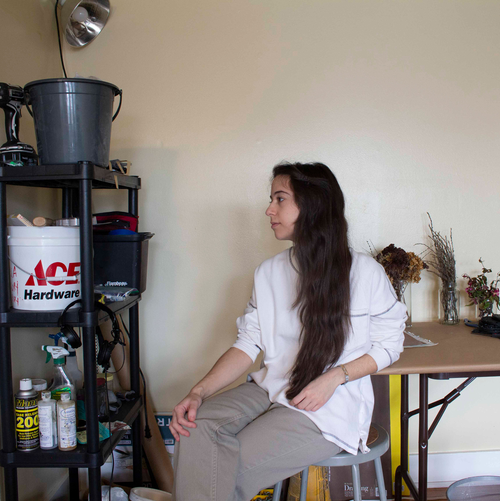

-
2020
Master of Architecture + Certificate in Historic Preservation. Schoool of the Art Institute of Chicago.
-
2015
Bachelor of Fine Arts, Interdisciplinary Sculpture. Maryland Institute College of Art.
How about now?
-

Leila Khoury (she/they) is a multidisciplinary artist based in Cleveland, Ohio. Khoury received her BFA in Interdisciplinary Sculpture from the Maryland Institute College of Art and her Master of Architecture and Certificate in Historic Preservation from the School of the Art Institute of Chicago.
Khoury’s graduate thesis, A Soulful Body: The Immigration and Placemaking of Arabs in Detroit, chronicles the history and built environment of Detroit’s Arab American communities. In addition to highlighting buildings that were adaptively reused by refugee and immigrant groups in the last century, A Soulful Body speaks to the ways in which the groups continually carve out space for themselves in spite of the displacement they’ve endured in both historic and contemporary contexts. A Soulful Body was selected to be published by Empress Editions through their juried Artist Book Residency in August 2020.
Khoury currently serves as Creative Director of an ongoing research project called the Cleveland Community Archives. An interactive website and storytelling platform, the Archives houses a growing collection of oral histories that document Cleveland’s DIY and experimental art spaces, mutual aid organizations, LGBTQIA+ venues, and other non-commercial spaces that have dissipated due to gentrification and other systemic acts of erasure.
Khoury’s work has been featured in solo and group exhibitions in Cleveland and Columbus, OH; Chicago, IL; Baltimore, MD; Washington, D.C.; Pittsburgh, PA; Waeukesha, WI; and Subhan, Kuwait. Between June and September 2018, two works by Khoury were featured in the National Museum of Women in the Arts’ exhibition series, Women to Watch.
Contact: lkhoury [at] saic.edu
• • •
-
2021
Author, A Soulful Body: The Immigration and Placemaking of Arabs in Detroit. Published by Empress Editions.
Creative Director, Cleveland Community Archives.